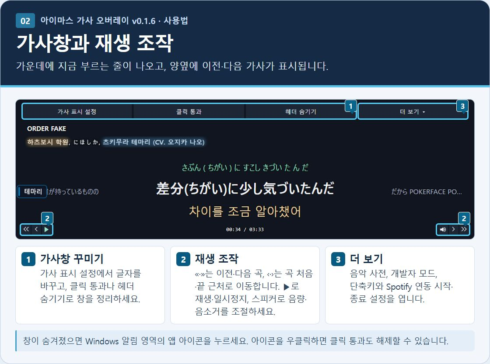
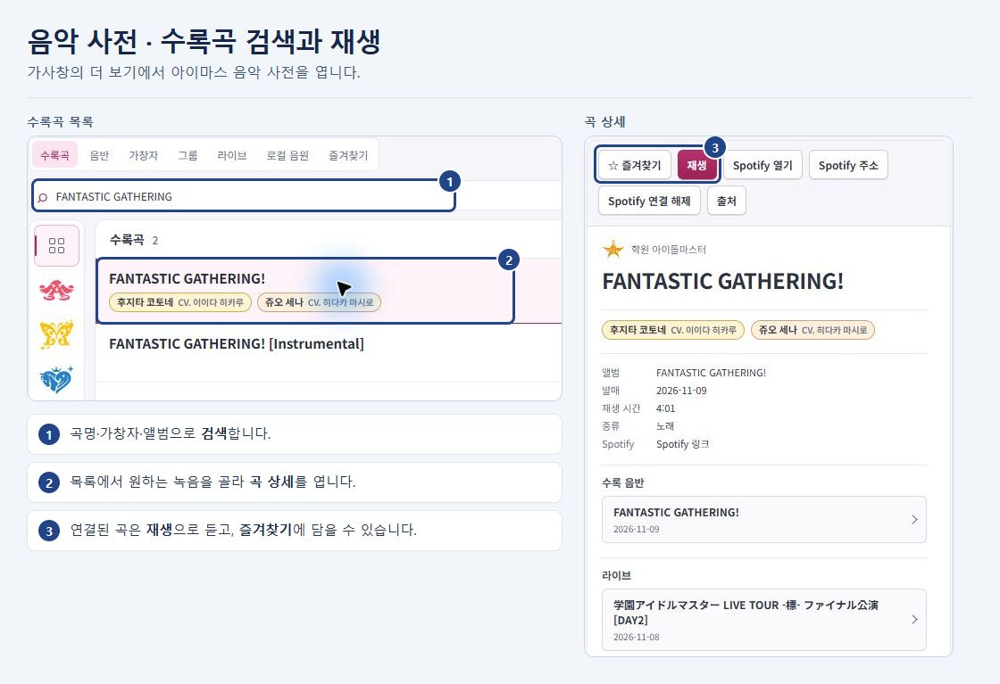
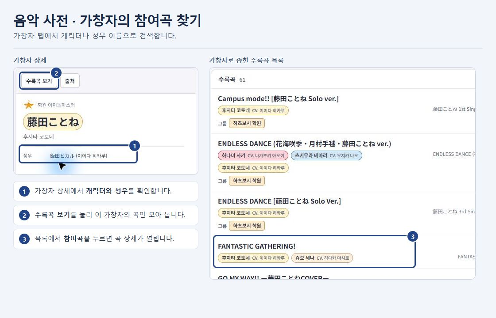
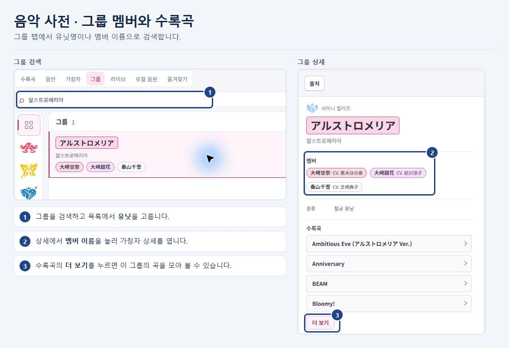
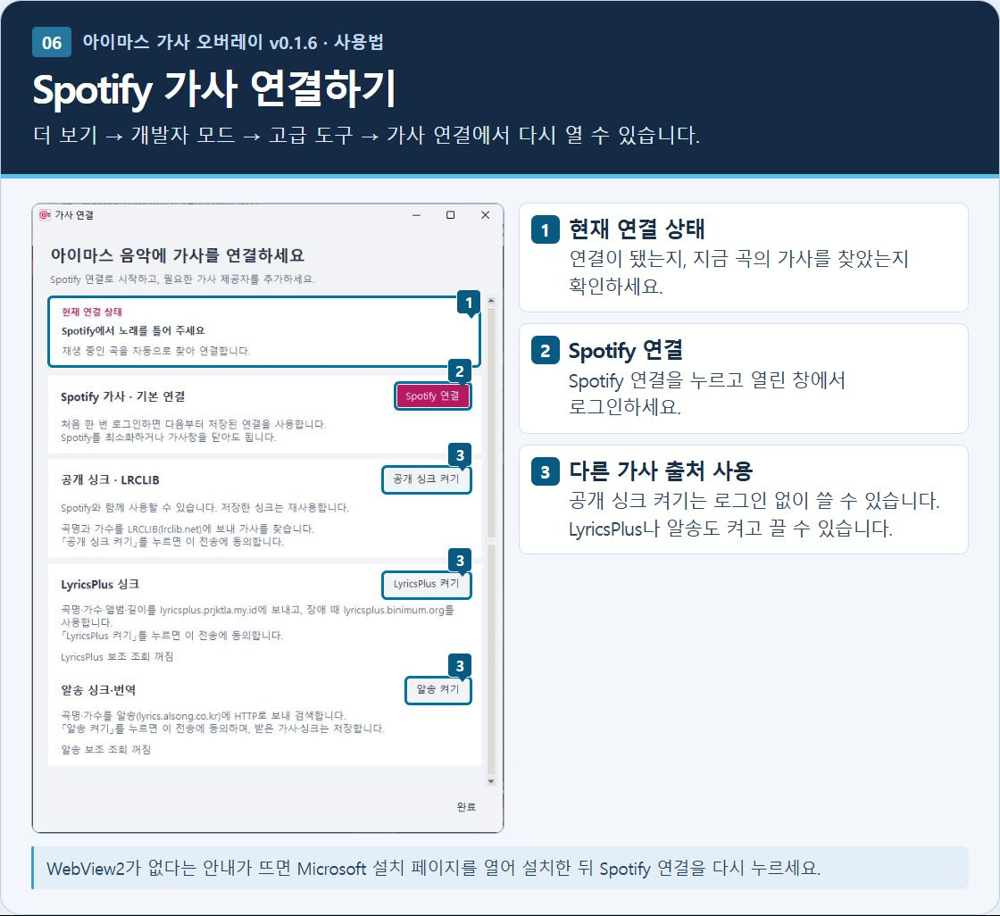
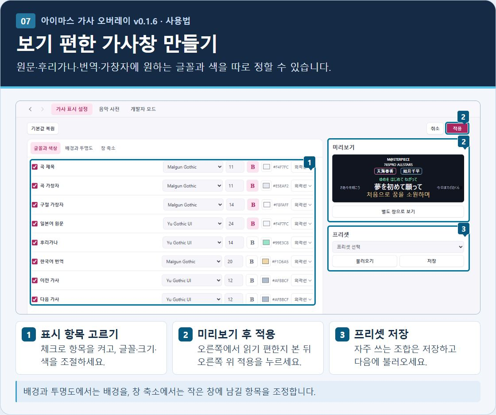
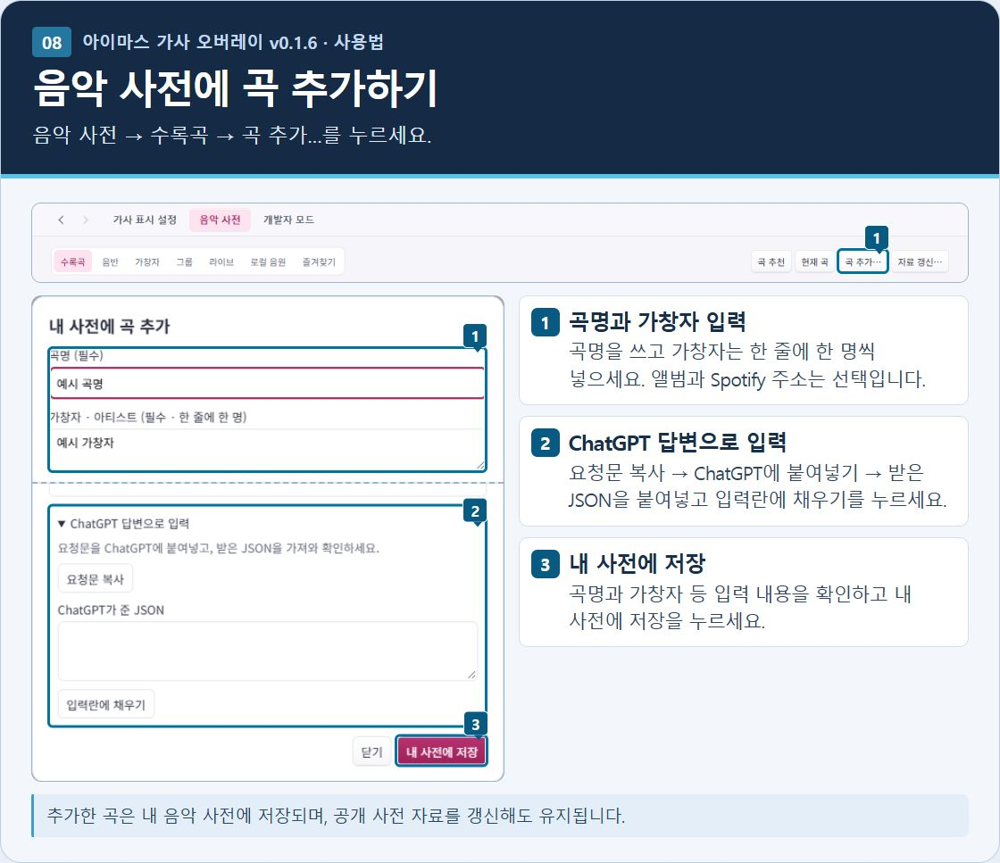
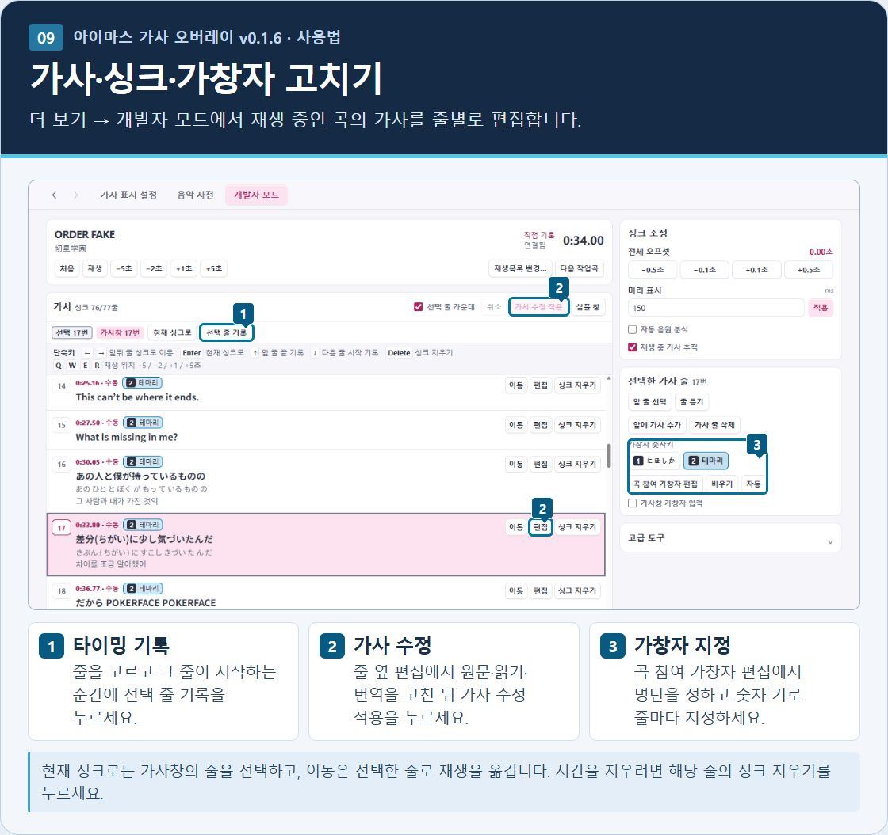
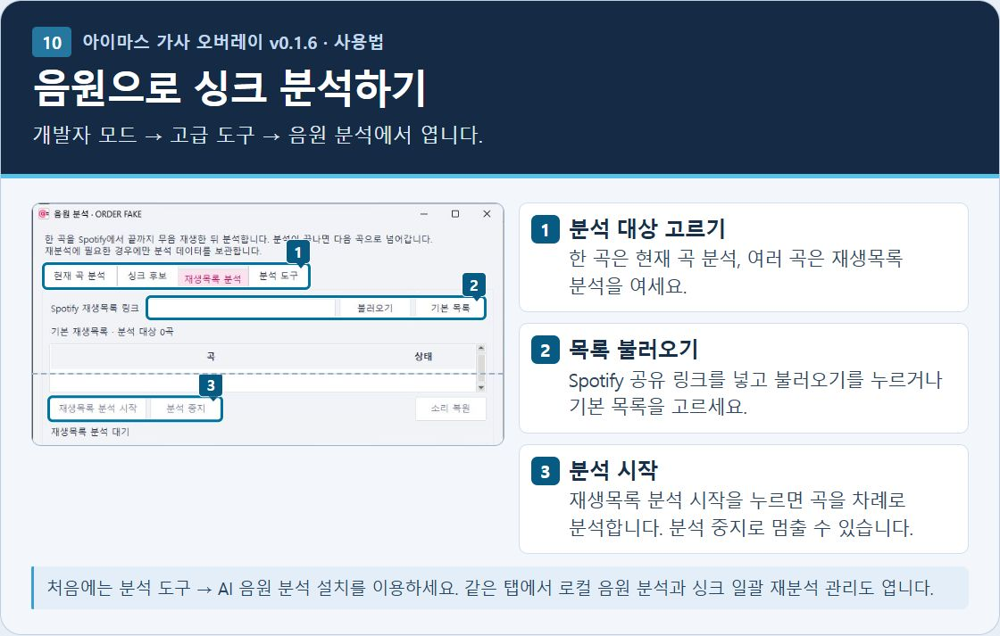

Spotify 재생에 맞춰 가사·독음·저장된 한국어 번역을 띄웁니다.
Spotify에서 제공하는 원문과 줄별 시간을 가져옵니다. 저장된 번역과 수동 싱크도 적용됩니다. 번역을 추가하려면 아래 AI 일괄 번역을 사용하세요.
개발자 모드에서 가사 줄을 골라 가창자 숫자키로 지정하세요. 곡 참여 가창자 편집에서 명단을 바꿀 수 있습니다.

가사창의 더 보기 또는 우클릭 메뉴에서 아이마스 음악 사전…을 여세요.
시리즈를 고르고 곡명·가창자·앨범으로 검색하세요. Spotify 수록곡만으로 좁히거나 현재 곡을 바로 엽니다. 곡 상세에서 재생과 ☆ 즐겨찾기를 쓸 수 있습니다. 곡 추천은 현재 조건에서 한 곡을 고릅니다.

캐릭터나 성우를 검색하세요. 수록곡 보기가 있으면 해당 가창자의 곡을 모아 볼 수 있습니다.

유닛명이나 멤버로 검색하세요. 음반에서는 수록곡, 라이브에서는 출연진과 세트리스트를 확인합니다.

가사가 부족하면 가사 연결에서 공개 싱크 켜기, LyricsPlus 켜기, 알송 켜기를 선택하세요. WebView2 안내가 뜨면 설치 후 Spotify를 다시 연결하세요.
고급 도구 → 알송 가사에서 직접 검색 후 현재 곡에 임시 연결할 수 있습니다. 계속 쓰려면 알송 확정, 되돌리려면 알송 연결 해제를 누르세요.

가사창은 드래그로 이동하고 가장자리로 크기를 조절합니다. 가사 표시 설정… → 별도 창으로 보기에서 미리 보세요. 더 보기에 헤더 숨기기, 배경 투명, 단축키와 Spotify 연동 시작·종료가 있습니다.

음악 사전 → 수록곡 → 곡 추가…에서 곡명과 가창자(한 줄에 한 명)를 입력하고 내 사전에 저장합니다. 앨범과 Spotify 주소는 선택이며 ChatGPT 답변으로 입력도 지원합니다.
기존 곡은 상세의 Spotify 주소로 녹음을 연결합니다. 내 파일은 로컬 음원 → 폴더 추가 → 수록곡 연결을 사용하세요.

개발자 모드에서 줄의 편집을 열어 원문·독음·번역을 고치고 가사 수정 적용을 누르세요. 선택 줄 기록으로 현재 시간을 붙이거나, 앞에 가사 추가와 가사 줄 삭제를 사용하세요. 전체 오프셋은 현재 곡, 미리 표시는 모든 곡에 적용됩니다.
작은 화면에는 심플 창을 사용하세요. 곡을 이어 작업하려면 재생목록 변경…에서 Spotify 목록을 열고 다음 작업곡을 누르세요.

개발자 모드 → 고급 도구 → AI 일괄 번역에서 저장된 가사를 모으거나 Spotify 원문 가져오기…에 곡 링크를 넣으세요. 지시문 복사를 눌러 원하는 AI에 붙여넣고 받은 답변을 답변 붙여넣기 → 답변 적용으로 저장합니다.
내 자료 관리에서 저장한 원문·독음·번역·수동 싱크·가창자·참여 명단을 확인하고 편집하세요. 번역 요청 대상도 고를 수 있습니다.
고급 도구 → 음원 분석에서 싱크 후보를 확인해 빈 구절에 적용하세요. 모델은 AI 음원 분석 설치에서 받습니다.

사전과 가사 자료는 음악 사전 → 자료 갱신… → 사전·가사 자료 다운로드에서 받을 수 있습니다.